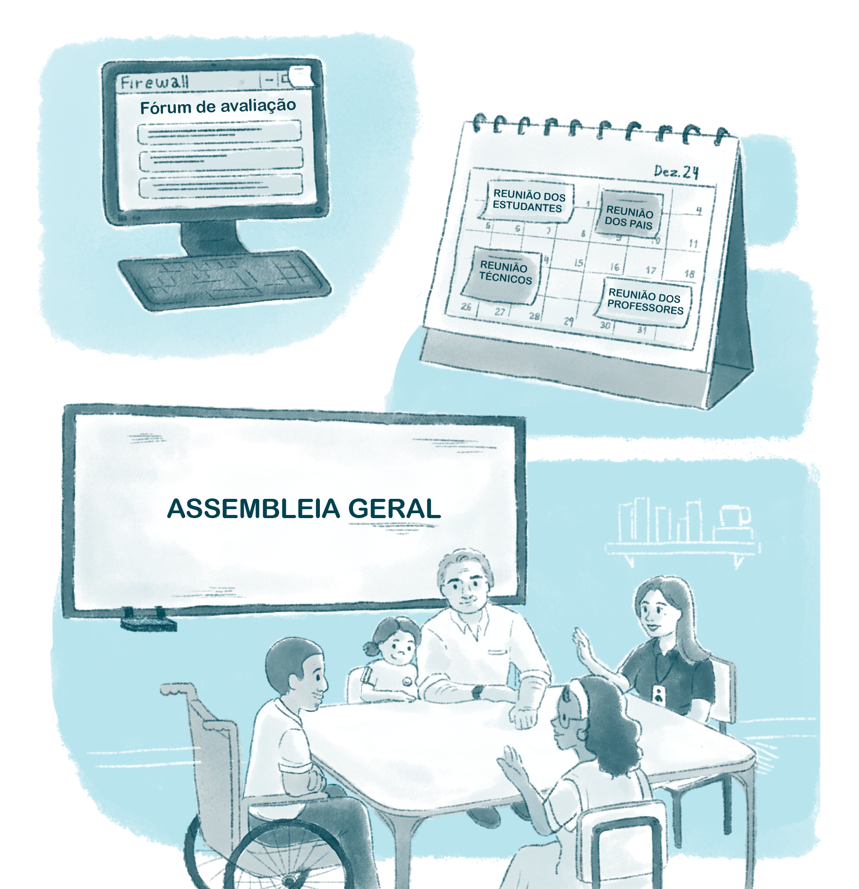
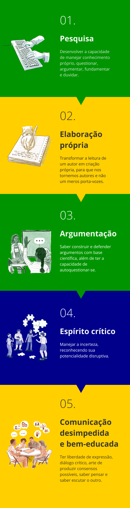

Autonomia e emancipação dos estudantes
Ao abordarmos a temática da autonomia e emancipação dos estudantes, temos como propósito refletir sobre todas as relações, ações e construções na instituição escolar enquanto promotoras dessa autonomia e emancipação na perspectiva de uma educação libertadora, considerando a realidade histórica e atual do Brasil.
Nosso propósito educativo precisa promover uma cultura sistemática de participação e emancipação na perspectiva do desenvolvimento da autonomia intelectual, ética e política dos adolescentes, jovens e adultos. Para tanto, precisamos nos desafiar a criar diversas instâncias de participação, discussão e deliberação em espaços formais de encontros entre os diversos segmentos da comunidade escolar e acadêmica.
É preciso praticar a escuta da comunidade – pais, estudantes, professores e funcionários – por meio de fóruns, reuniões por segmentos, assembleias consultivas e deliberativas, de forma contínua e sistemática. A prática da escuta e do diálogo deve estender-se para todas as salas de aula, setores, atividades acadêmicas e relações do cotidiano escolar. A formação emancipatória para a cidadania e a democracia precisa ser praticada e vivenciada na escola e na universidade.

Título: Atuação da comunidade escolar
Fonte: Prosa (2024b).
Baseamo-nos na LDBEN (Lei nº 9.394/1996), que prevê o pleno desenvolvimento do educando, seu preparo para o exercício da cidadania e sua qualificação para o trabalho em instituições escolares que praticam a gestão democrática e dialógica para formar cidadãos solidários e com espírito público (Brasil, 1996). A sociedade, as comunidades, as famílias, as instituições de ensino e todos os educadores precisam agir junto com os estudantes, compartilhando sonhos e projetos de vida.
Toda educação deveria buscar o desenvolvimento da autonomia dos estudantes, desenvolvendo as capacidades de autodeterminação, a independência de constrangimento externo e a liberdade no sentido de seu exercício. Numa perspectiva mais sociológica, essa autonomia significa a potência de um grupo ou coletivo – particularmente de um grupo político – de organizar e administrar a si mesmo. Essa potência pode ser absoluta ou limitada. Quando é absoluta, geralmente é denominada soberania, conforme Mário Ferreira dos Santos (1965).
Para Paulo Freire, ensinar exige respeito à autonomia do ser do educando. Ele afirmava que o respeito à autonomia e à dignidade de cada um é um imperativo ético, e não um favor que podemos ou não conceder uns aos outros. Saber que devemos respeito à autonomia e à identidade do educando exige de nós uma prática que seja coerente com este saber. Para Freire (1996), podemos não aceitar a concepção pedagógica de determinado autor, inclusive devemos expor aos estudantes as razões de nossa oposição. Entretanto, o que não podemos é, em nossa crítica, mentir ou distorcer a verdade. O preparo científico do professor deve coincidir com sua retidão ética.
Conhecimento e autonomia
Já o educador Pedro Demo (2004) aponta que o professor maneja duas rédeas estratégicas para a vida dos estudantes: ele pode contribuir para forjar sujeitos capazes de construir sua própria história, bem como pode fomentar em cada jovem a habilidade de conhecimento com autonomia, em nome da e para a autonomia (Demo, 2004, p. 32). Essa abordagem implica, necessariamente, educar e conhecer, para que seja possível gestar cidadãos capazes de mudar a sociedade em prol do bem comum.
O processo de formação do estudante compreende o apoio por outra pessoa, geralmente mais experiente, no sentido da construção da autoria e da autonomia. Este outro é o apoio, uma vez que ninguém se emancipa sozinho; o outro nos constitui. Formar, segundo Demo (2011), significa aprender a construir-se como referência das próprias oportunidades no contexto social. Neste sentido, duas referências são relevantes:
- Autoria: refere-se à habilidade de construir a vida como texto próprio, tanto no plano individual quanto no coletivo, servindo como expressão de cidadania ativa.
- Autonomia: refere-se à habilidade de gestar roteiro de aperfeiçoamento incessante da personalidade, tendo como resultado a constituição de um sujeito capaz de desenvolver sua própria história.
Pedro Demo também adverte que autoria e autonomia não são completas, tendo em vista que não somos seres completos: somos seres inacabados. Formação implica capacidade de convivência com outras autorias e autonomias, igualitariamente. Da mesma forma, aprendizagem e formação não são sinônimos; a aprendizagem acrescenta habilidades relativas à produção do conhecimento, enquanto a formação refere-se ao “aprender a aprender”, no sentido de desenvolver a autoria e a autonomia do sujeito.
Por coerência, segundo Demo (2004), a aprendizagem precisa desenvolver habilidades de dentro para fora, tais como:

Título: Habilidades de aprendizagem
Fonte: Demo (2004).
Elaboração: Prosa (2024c).
Por contingências históricas, nossa educação brasileira e nossas instituições formadoras se vinculam a procedimentos de ensino. Persiste, até hoje, a concepção de “professor horista ” contratado sob caráter temporário para dar uma aula na qual transmite para o estudante o que absorveu de maneira reprodutiva, a partir de outros autores. Quando não somos autores, não conseguimos transformar os estudantes em autores de suas aprendizagens e conhecimentos. O ensino pela pesquisa é uma das estratégias que requer professores-autores formando estudantes protagonistas.
O desenvolvimento da autonomia e do protagonismo estudantil decorre de processos participativos, coletivos e autorais dos docentes e discentes. Não há docência sem discência: as duas se complementam e seus sujeitos – apesar das diferenças que os conotam – não se reduzem à condição de objeto um do outro.
Quem ensina, aprende ao ensinar; e quem aprende, ensina ao aprender
Por consequência, ensinar exige rigorosidade metódica e pesquisa, pois, quanto mais criticamente se exerce a capacidade de aprender, tanto mais se constrói e desenvolve a “curiosidade epistemológica” – sem a qual não alcançamos o conhecimento cabal do objeto.
Esta perspectiva freiriana reforça o compromisso da formação com a emancipação dos estudantes, superando o estado da heteronomia, ou seja, da condição de opressão, tornando explícito ao sujeito que essa realidade pode se tornar possível através de práticas de liberdade incorporadas pelos próprios oprimidos. A emancipação dos sujeitos é, de fato, um processo de libertação política, cultural, econômica e social de todos que padecem do sistema opressor, começando pelos oprimidos, ao libertarem a si mesmos, e, por conseguinte, os opressores, em uma dialética que visa impedir a reprodução da relação opressor-oprimido.
Mas como ter uma escola emancipatória em uma sociedade opressora, especialmente em um país tão marcado pelas desigualdades raciais, étnicas, de gênero e de classe? Como motivar as juventudes para compor um cenário de autonomia sem, enquanto profissionais da educação, cair na armadilha de responsabilizá-las diariamente pelo fracasso escolar e profissional, superando essa visão fatalista sobre a realidade social e educacional e sobre o "desinteresse" pela educação e pelo trabalho?